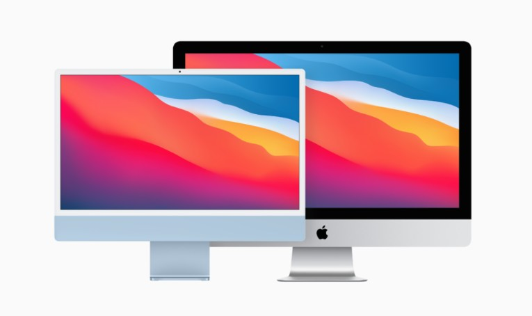

iMac은 Internet Macintosh의 약자이다. 약자 Mac에서 알 수 있듯이 당연히 전신은 Macintosh.
참고로 전신의 전신은 Apple I, Apple II이다.
Apple에서 1998년부터 출시하고 있는 데스크탑 컴퓨터로, 외관적인 특징으로는 모니터와 본체가 일체화된 올인원을 들 수 있다.
말 그대로다. 하드웨어라고는 보이는 저거 하나가 땡이다.
일반적인 PC처럼 수많은 선을 연결하느라고 공간을 낭비할 필요가 없다는 건 큰 장점이다.
Apple 특유의 미니멀리즘이 적용되어 외관이 상당히 심플하게 디자인되어 있다.
한때 Apple의 상징과도 같았던 접두사 'i'를 처음으로 사용한 제품이기도 하다.
